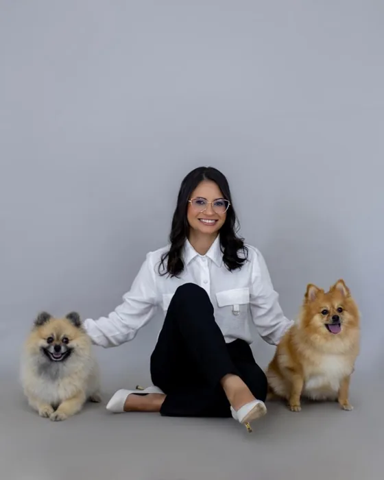
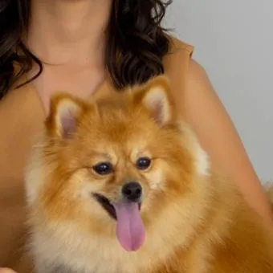
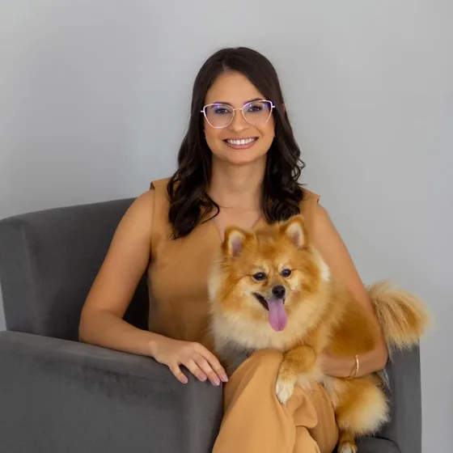

Alopecia X
Queda de pelo sem coceira, comum no spitz alemão (lulu-da-pomerânia). A avaliação descarta outras causas e define o que pode ajudar o seu cão.

O que é
A alopecia X é uma perda de pelo que não costuma causar coceira nem inflamação. O pelo vai rareando de forma simétrica no tronco, no pescoço, na cauda e na parte de trás das coxas, enquanto a cabeça e as patas costumam manter a pelagem. Com o tempo, a pele exposta pode escurecer.
Aparece com mais frequência em raças de pelagem densa, como o spitz alemão (lulu-da-pomerânia), o chow-chow, o husky siberiano e o malamute do Alasca. A causa ainda não é totalmente conhecida e envolve o ciclo de crescimento do pelo.
Sinais para observar
- Pelo opaco, seco ou com aspecto de pelo de filhote que não troca
- Falhas que começam no tronco, no pescoço, na cauda ou na parte de trás das coxas
- Pele exposta que escurece
- Pelo que não volta a crescer depois da tosa


Como é a investigação
Outras doenças provocam queda de pelo parecida, como o hipotireoidismo e o hiperadrenocorticismo (síndrome de Cushing), e precisam ser descartadas antes de se falar em alopecia X. Por isso a consulta reúne histórico, exame da pele e do pelo e, conforme o caso, tricograma, exames de sangue e biópsia de pele.
Opções de tratamento
Não existe tratamento com resultado garantido para a alopecia X, e a resposta varia de um cão para outro. Entre as opções que podem auxiliar no crescimento dos pelos estão a castração, quando o cão ainda não é castrado, alguns medicamentos, sempre com prescrição e acompanhamento, e técnicas aplicadas na pele, como o microagulhamento e o peeling de diamante.
A Dra. Fernanda tem formação em microagulhamento e peeling de diamante para alopecia X. A indicação de cada técnica, o número de sessões e o que esperar delas são conversados na consulta.
Cuidados com a pele exposta
Enquanto o pelo não volta, a pele fica mais sensível ao sol e ao frio. Na consulta, você recebe orientação sobre como proteger o seu cão no dia a dia.

Seu spitz está perdendo pelo?
Agende uma avaliação dermatológica em Jales/SP. A consulta dura cerca de uma hora e é feita com hora marcada.